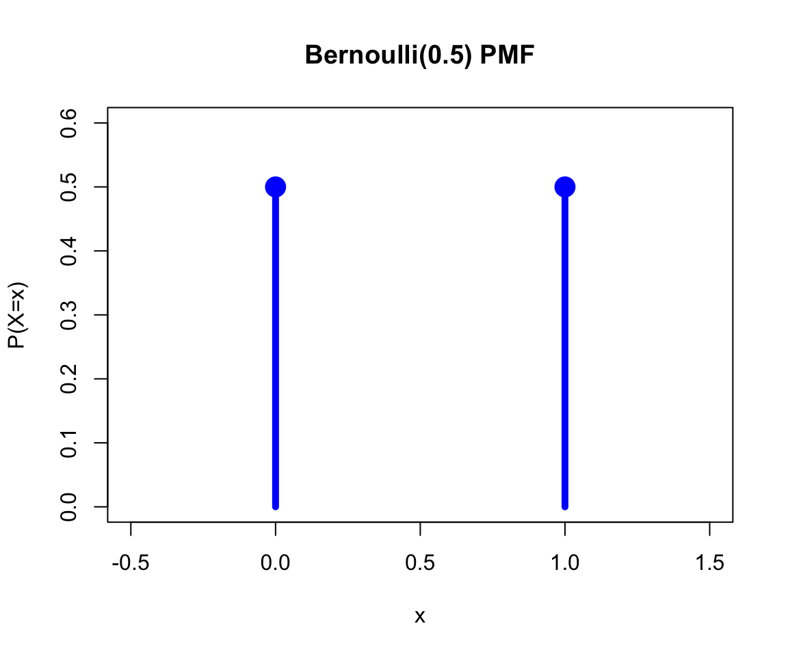
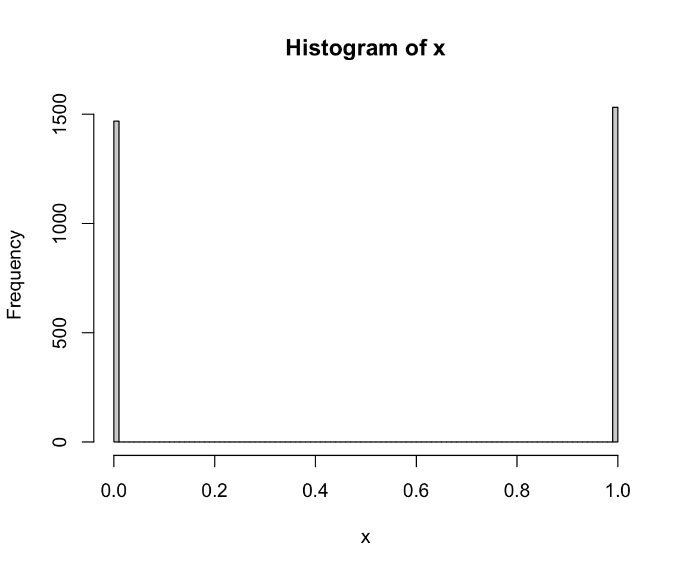
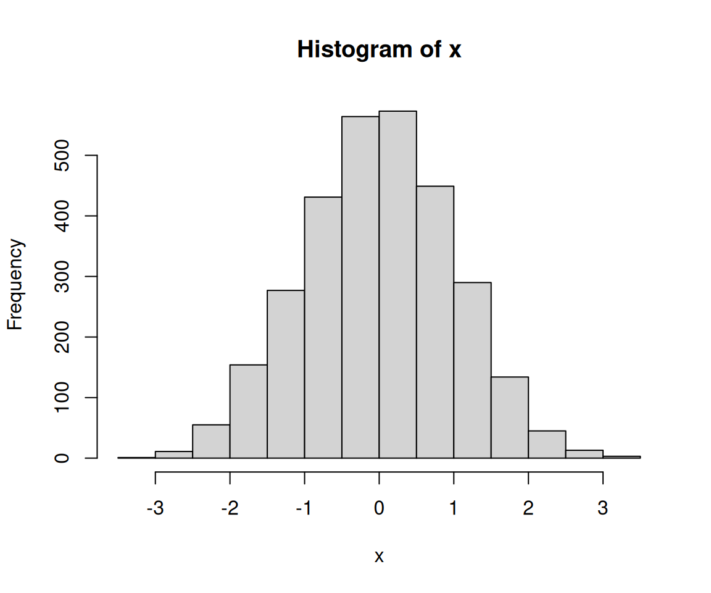
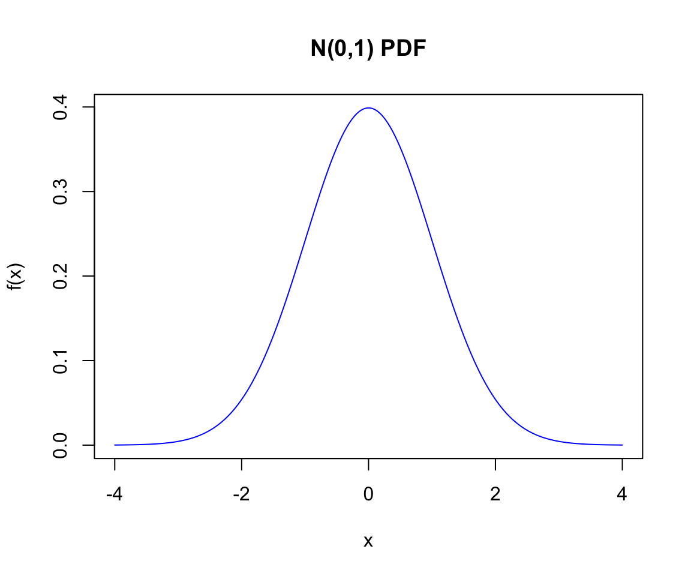

2025-10-23
# 예제1 – 확률분포표
아래를 가정하자. \[X \sim Bernoulli(0.5)\]
이 경우 \(P(X=x)\)는 아래와 같은 표로 정리할 수 있다.
| \(x\) | 0 | 1 |
|---|---|---|
| \(P(X=x)\) | 0.5 | 0.5 |
이러한 표를 확률분포표라고 한다.
확률분포표는 아래와 같은 함수로 표현할수도 있다.
\[f_X(x)= \begin{cases} 0.5 & x=0 \\ 0.5 & x=1 \\ 0 & o.w. \end{cases} \]
그림으로는 아래와 같이 표현가능하다. 이러한 함수를 확률질량함수(pmf)라고 부른다.
Figure: 베르누이분포의 확률질량함수
이 함수는 아래와 같은 히스토그램의 극한을 이용하여 상상할 수도 있다.
Figure: 베르누이분포의 히스토그램
# 생각해볼점 – 아래의 확률분포표는 \(Bernoulli(0.5)\)를 완전히 특정한다.
| \(x\) | 0 | 1 |
|---|---|---|
| \(P(X=x)\) | 0.5 | 0.5 |
따라서 확률분포표를 주는 경우는 \(Bernoulli(0.5)\)임을 굳이 명시하지 않아도 좋겠다. 따라서 \(X \sim Bernoulli(0.5)\)를 아래와 같이 써도 무방하다.
\[X \sim P\]
단, \(P(X=x)\)는 아래의 표와 같이 정의된다.
\(x\) 0 1 \(P(X=x)\) 0.5 0.5
좀 더 일반적으로 \(X \sim Bernoulli(\theta)\) 는 아래와 같이 표현할 수 있다.
\[X \sim P\]
단, \(P(X=x)\)는 아래의 표와 같이 정의된다.
\(x\) 0 1 \(P(X=x)\) \(1-\theta\) \(\theta\)
또는 좀 더 명시적으로 \(X \sim Bernoulli(\theta)\) 를 아래와 같이 표현할 수 있다.
\[X \sim P_\theta\]
단, \(P_\theta(X=x)\)는 아래의 표와 같이 정의된다.
\(x\) 0 1 \(P_\theta(X=x)\) \(1-\theta\) \(\theta\)
#
예제2
아래를 가정하자.
\[X \sim N(0,1)\]
여기에 대응하는 확률분포표는 무엇일까? \(X\)의 범위가 무한대이므로 표를 만들 수 없다.
그렇지만 히스토그램은 그릴 수 있다.
Figure: 정규분포의 히스토그램
베루누이의 경우 히스토그램의 극한을 이용하여 확률분포표를 상상할 수 있었는데, 이 경우도 저 히스토그램의 극한을 이용하여 확률밀도함수(pdf)를 상상할 수 있다.
Figure: 표준정규분포의 확률밀도함수
- 여기에서 확률분포표로 정의되는 \(P\)는 데이터를 만들어내는 규칙을 의미한다고 볼 수 있다. 즉 진실공간의 정보이다. 그래서 종종 추정의 대상이 되기도 한다. 또한 “데이터를 만드는 방법을 정리한 정보” 라고 해석하기도 한다.
- 진실세계의 모든 정보를 안다는 것은 우리가 데이터를 생성하기 위해 필요한 모든 정보를 알고 있다는 말과 동일하다.
- \(P\)는 \(X\)가 가질수 있는 값의 범위를 정의한다는 (놓치기 쉬운) 사실도 주목하자. 예를들어 \(P(X=x)\)는 아래의 표와 같이 정의한다고 가정하자.
| \(x\) | 0 | 1 |
|---|---|---|
| \(P(X=x)\) | \(1-\theta\) | \(\theta\) |
이는 \(X\)가 가질 수 있는 값이 0과 1임을 의미한다. (\(X\)의 support가 \(\{0,1\}\)이라고 표현하기도 함)
- \(P\)를 정의하는 방식은 매우 다양하다. 예를들어 아래와 같은 확률분포표를 고려하자.
| \(x\) | 0 | -1 | 1023 |
|---|---|---|---|
| \(P(X=x)\) | 0.5 | 0.2 | 0.3 |
이것은 시행을 해서 얻은 결과가 0일 확률이 0.5이고 -1일 확률이 0.2이고 1023일 확률이 0.3이라는 의미이다.
- 일부의 \(P\)는 사람들이 자주 애용하는 편인데 그런 경우 이름을 붙이는 것이 편리하다는 생각을 하였다. 예를들어 아래와 같은 분포는 사람들이 관심이 있는 편인데
| \(x\) | 0 | 1 |
|---|---|---|
| \(P(X=x)\) | 0.5 | 0.5 |
이러한 분포는 사람들이 베르누이라고 부른다.
- 아래와 같은 분포도 사람들이 종종 관심이 있다. (공평한 동전을 두번던져서 앞면이 몇번나오는지를 세면 된다)
| \(x\) | 0 | 1 | 2 |
|---|---|---|---|
| \(P(X=x)\) | 0.25 | 0.5 | 0.25 |
따라서 이러한 분포에도 이름이 붙어있는데 이것을 이항분포라고 한다.
- 아래와 같은 분포도 이항분포라 부른다. (공평한 동전을 5번 던져서 앞면이 몇번 나오는지 세어본다고 상상하자)
| \(x\) | 0 | 1 | 2 | 3 | 4 | 5 |
|---|---|---|---|---|---|---|
| \(P(X=x)\) | 0.03125 | 0.15625 | 0.3125 | 0.3125 | 0.15625 | 0.03125 |
- 네임드분포는 종종 한두개의 숫자로 특정지을 수 있다. 예를들어 베르누이 분포는
| \(x\) | 0 | 1 |
|---|---|---|
| \(P(X=x)\) | ??? | ??? |
의 형태를 가지는데 \(P(X=1)\)에 대응하는 숫자만 특정한다면 나머지는 자동으로 정해진다.
- 아래와 같은 분포는
| \(x\) | 0 | 1 | 2 |
|---|---|---|---|
| \(P(X=x)\) | 0.25 | 0.5 | 0.25 |
분포를 특정하기 위해 최소 2개의 숫자를 정해야할 것 처럼 보인다. 하지만 이항분포가 독립적인 베르누이 시행을 결합하여 얻은 결과란 사실을 캐치하면 이것 역시 하나의 숫자로 분포를 특정할 수 있음을 알게 된다.
- 분포를 특정하는데 필요한 숫자를 모수라 한다. 일반적으로 모수는 \(\theta\)라는 기호를 사용한다. 그렇지만 모수가 특별한 의미를 가짐을 강조하면 \(\theta\)대신에 다른기호를 쓰기도 한다. (예를들면 \(p\))
- 모수는 1개일수도 있고 여러개일 수도 있다. 예를들어 이항분포는 2개의 모수를 가진다.
\[X \sim Binomial(n,p)\]
- 이항분포에서 난수를 생성하는 R코드는 아래와같다.
[1] 2 2 2 3 4 1 4 2 2 2 2 2 3 4 4 3 0 2 2 2 3 1 3 2 1 3 3 3 3 3 3 2 2 0 2 1 2
[38] 4 3 1 2 2 4 3 2 3 2 2 2 2 2 0 5 2 3 2 1 2 3 3 3 4 2 5 4 0 3 4 3 1 4 3 3 2
[75] 3 4 2 2 5 3 4 4 4 1 3 3 5 3 3 2 1 1 4 3 2 3 2 3 3 2이것은 \(Binomial(5,0.5)\) 에서 100개의 난수를 뽑는 코드이다.
- 베르누이분포는 \(n=1\)인 이항분포라 할 수 있다. 따라서 성공확률이 0.5인 베르누이 분포에서 100개의 난수를 뽄느 R코드는 아래와 같다. (베르누이분포를 )
- 두 확률변수 \(X\)와 \(Y\)의 분포가 같다라는 것을 기호로 \(X \overset{d}{=} Y\)라고 표현하기도 한다.
- 만약에
이면 \(X_1+X_2 \overset{d}{=} Y\)가 성립한다.
- 같은 이름의 분포라 할지라도 다른 확률분포표를 가지는 경우가 있다. 예를들면 아래는 모두 베르누이라 부른다.
| \(x\) | 0 | 1 |
|---|---|---|
| \(P(X=x)\) | 0.3 | 0.7 |
| \(x\) | 0 | 1 |
|---|---|---|
| \(P(X=x)\) | 0.5 | 0.5 |
그렇지만 같은 이름을 가지고 같은 모수값을 가진다면 분포는 하나로 특정된다.
- 네임드분포를 잘 정의해두면 편리하다. 왜냐하면
\[X \sim P_\theta\]
단, \(P_\theta(X=x)\)는 아래의 표와 같이 정의된다.
\(x\) 0 1 \(P_\theta(X=x)\) \(1-\theta\) \(\theta\)
라고 정의해야 할 일을 \(X \sim Bernoulli(\theta)\)라고 간단히 정의할 수 있기 때문이다.
- 주어진 데이터를 관찰하며 “이 데이터는 이러이러한 규칙으로 만들어진 것 같아” 라고 상상하며 데이터를 만드는 부분을 역으로 추정하는 문제를 상상하자. 데이터가 만들어지는 규칙을 전반적으로 상상하는 과정을 모델링이라고 한다. 예를들어 관측한 \(n\)개의 데이터가 정규분포에서 나왔다고 상상한다면 이는 아래와 같이 모델링을 한 것이다.
\[X_1,\dots,X_n \sim N(\mu,\sigma^2)\]
모델링을 통해 상상한 규칙을 구체화하는 과정에서 어떠한 숫자들을 특정해야 한다면, 그걸 추정하고자 할텐데, 이러한 행위를 모수추정이라고 한다 (위의 예시에서는 \(\mu\)와 \(\sigma^2\)를 특정하면된다).
- \(X \sim P_{\theta}\) 라고 표현한다는 것은 \(\theta\)라는 숫자만 알고 있다면 진실세계의 정도를 모두 특정할 수 있다는 것을 의미한다. 이러한 경우를 모수적 모델링(parametric modeling)이라고 부른다.1